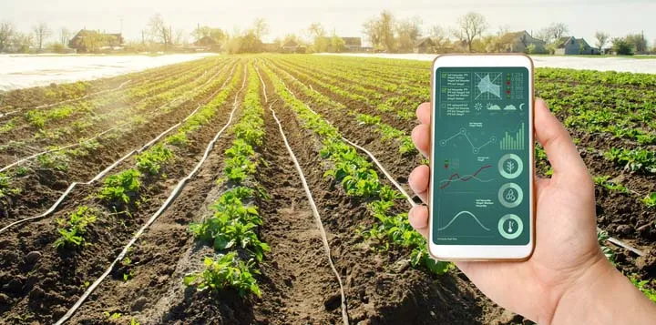
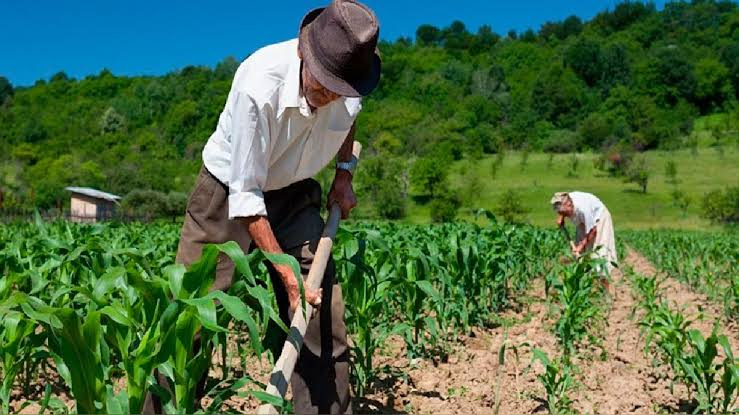
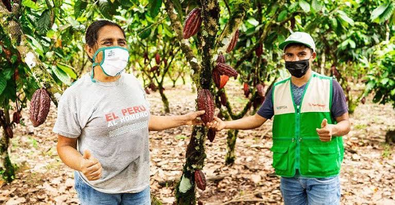

Solorzano Sullca, Benjamin
Domain Analyst / Requirements Lead
SumaqAgro transforma datos satelitales y agrícolas en información útil...
Sobre SumaqAgro

SumaqAgro nace para cerrar la brecha de tecnificación en las cuencas de papa y café sin exigir costosos sensores en campo. Transformamos imágenes satelitales abiertas y datos agronómicos en herramientas accesibles de monitoreo, cálculo de costos reales y certificación de calidad, permitiendo que productores y organizaciones agrarias tomen decisiones con respaldo técnico.
Las personas detrás de la tecnología
Cinco perfiles comprometidos con acercar la agricultura de precisión a quienes cultivan el futuro del Perú.
Domain Analyst / Requirements Lead
Team Leader / Scrum Master
UX/UI Designer / Product Designer
Software Architect
Product Owner
Nuestra comunidad
Trabajamos con quienes hacen posible la seguridad alimentaria del país.
Foco: Papa y café en secano

Foco: Acopio colectivo y trazabilidad

Foco: Monitoreo multicampo
Tecnología que genera valor
Herramientas simples y poderosas para tomar mejores decisiones en el campo.
Panel basado en imágenes de satélites abiertos para calcular índices de vegetación (NDVI) y estrés hídrico de tus parcelas, sin adquirir ni instalar hardware físico en tierra.
Módulo para registrar jornales, insumos agrícolas y maquinaria en tiempo real. Calcula de forma automática el costo unitario por quintal o tonelada y fija tu punto de equilibrio financiero.
Genera reportes digitales verificables con la clasificación de calibres en papa o el perfil y puntaje de taza en café, protegiendo tu producción ante penalizaciones arbitrarias en el acopio.
Sistema centralizado para el envío de recomendaciones técnicas preventivas y recetas fitosanitarias digitales para combatir plagas como la roya amarilla o el gorgojo de los Andes.
Demo del producto
Video demostrativo
Reproduce una vista general de SumaqAgro
Planes
S/0
1 parcela, NDVI básico y registro de jornales.
Empezar gratisS/189 /mes
50 productores, certificación de calibres y raza, exportación de reportes.
Suscribir cooperativaS/89 /mes
20 fundos supervisados, recetas técnicas y NDVI avanzado.
Prueba de 14 díasResultados reales
Métricas que sustentan nuestro compromiso con la pequeña agricultura y testimonios de quienes ya confían en SumaqAgro
Voces que nos inspiran
“Ahora sé cuándo regar y cuánto me cuesta cada saco de papa.”
Juan Huamán, productor de papa
“La certificación digital nos abrió mejores precios de exportación.”
Elena Vargas, cooperativa cafetalera
Únete a una comunidad que cultiva un futuro mejor con tecnología.
Registrarse gratis